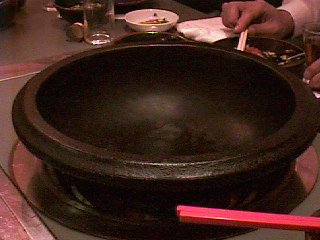
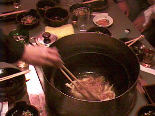
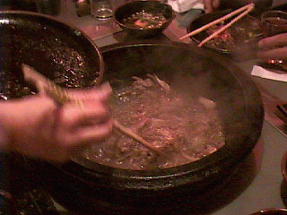
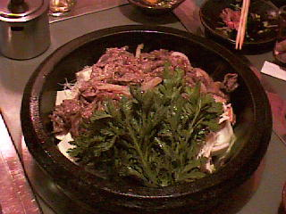

石頭火鍋の作り方

石鍋に胡麻油を入れて、良く加熱します。

鍋の回りに油跳ねガードを立て、肉、イカ等を入れ、軽く炒めます。

炒めた具を、一度取り出します。

鍋の中に特製のダシと豆腐、野菜、魚等の具を入れ、先ほど取り出した肉を上にのせて、後は煮込めばできあがりです。
ちょっと、オイリーですが、なかなか美味です。鍋の後の雑炊も最高です。
この鍋は有名で、テレビや雑誌でも紹介されています。
【一つ前に戻る】